| O que há neste site? |
| Neste site apresentará alguns modelos de lançamento de celulares. |
| Com alguns modelos como: |
(Samsung)
(LG)
(Iphone>)
(Motorola)
(Xiaomi)
Mostrará todas as origens de cada celular.
As origens são:
(Samsung):
Tudo começou na Coreia do Sul, mais precisamente em 1938.
Com 28 anos, o empresário Byung-Chull Lee já acumulava investimentos em plantações de arroz e muitos estudos em economia,
mas resolveu abrir com verba bem limitada uma tal de Samsung Trading Company na cidade de Daegu.
Você não encontrava eletrônicos por lá: ela era uma pequena loja de importação e exportação de produtos como peixe desidratado,
vegetais e macarrão. O nome vem dos caracteres coreanos "Sam", que significa três, e "Sung", que é estrela.
O numeral no país significa “grande, vasto e forte”, e esses deveriam ser os pilares da empresa.
As logos da Samsung tinham as três estrelas até 1993, quando foi criado o famoso símbolo com o emblema em azul.
Em dez anos, a Samsung Trading Company se tornou uma das maiores empresas do setor no país,
dona de moinhos e fábricas próprias. Tecido, açúcar e algodão eram alguns dos principais produtos dela nessa época.
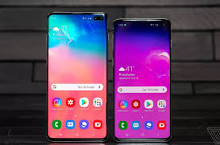
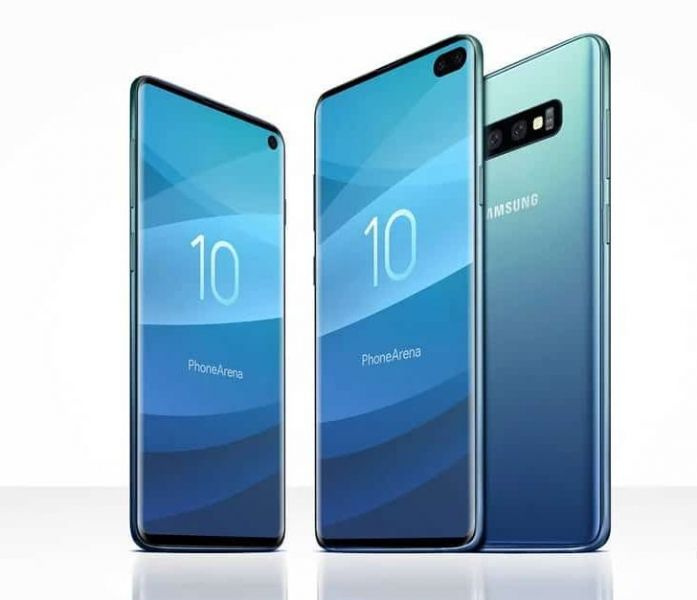
(LG):
A LG como conhecemos atualmente começou a ser construída em 1958,
quando o conglomerado LG, fundado por In-Hwoi Koo e John Koo em 1947 na cidade de Pusan,
resolveu iniciar a operação de uma nova empresa, batizada como Goldstar Corporation. Esta nova companhia era totalmente focada na fabricação de eletrônicos,
tendo introduzido no mercado coreano o primeiro rádio produzido no país logo no ano seguinte, o A-501.
Ainda em 1959, a companhia iniciou a produção de sua primeira geladeira, iniciando a linha chamada de Lucky.
Com o início da década de 60, a empresa começou a evoluir cada vez mais,
iniciando a fabricação dos seus primeiros ventiladores e telefones,
e se firmando como uma das grandes potências da época.
Em 1963, a Goldstar começou a exportar os seus rádios para os Estados Unidos e Hong Kong,
iniciando assim a ganhar nome ao redor do mundo.
Em 1966, porém, é que a companhia realizou seu grande feito,
produzindo a primeira TV preto e branco da coreia do sul, conseguindo no ano seguinte fabricar o primeiro rádio AM/FM do país.
Em 1968, foi a vez do ar condicionado ser introduzido no mercado local pela empresa.
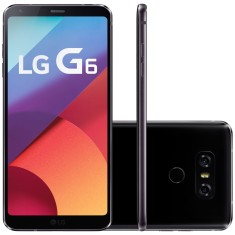
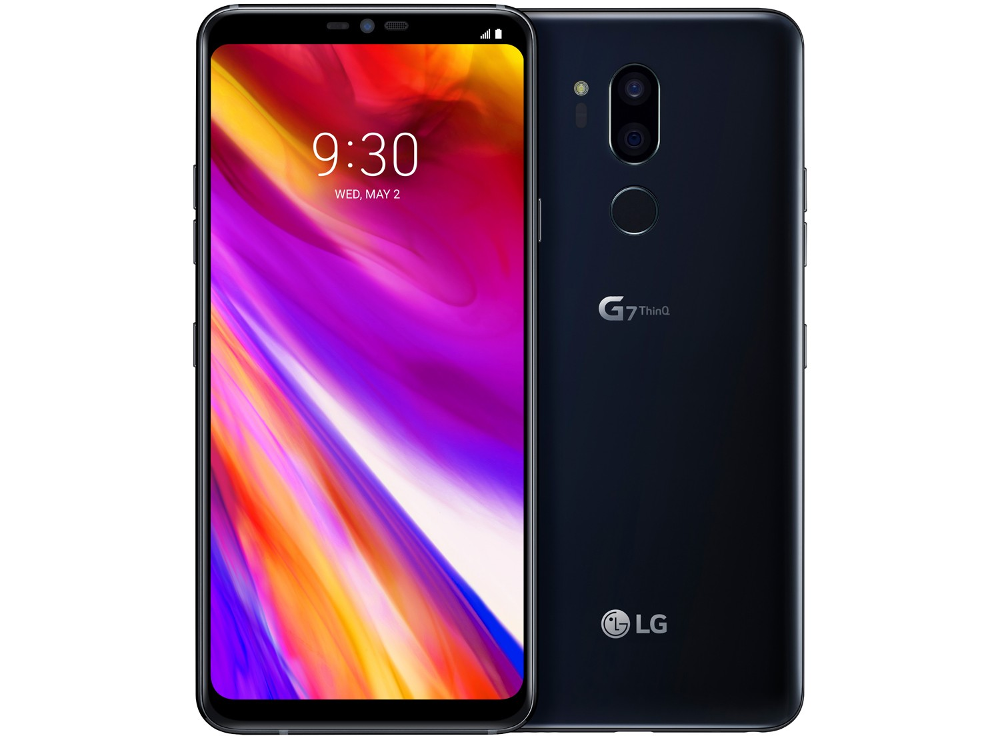
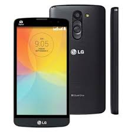
(Iphone):
Steve Jobs e Steve Wozniak fundam a Apple vendendo o revolucionário computador pessoal que ficou conhecido como Apple I.
Antes dos 30 anos de idade eles já eram milionários.
Jobs, que sempre teve problemas de autoritarismo e manias, começa a piorar e o convívio com ele fica impossível.
A Apple, que já era uma empresa aberta a investidores, vota e decide demitir seu fundador por ser despreparado a um cargo de tamanha importância.
O substituto acaba se mostrando um péssimo gestor da área da tecnologia (ele havia feito sucesso como CEO da Pepsi) e a Apple despenca rumo à falência.
A saída e última cartada foi comprar a NeXt, a nova empresa de Steve Jobs, e assim trazer de volta o único homem capaz de reestruturar a Apple.
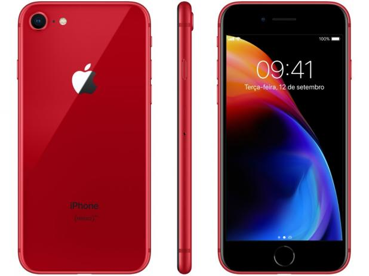
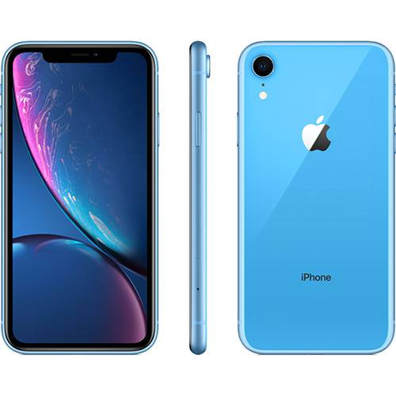
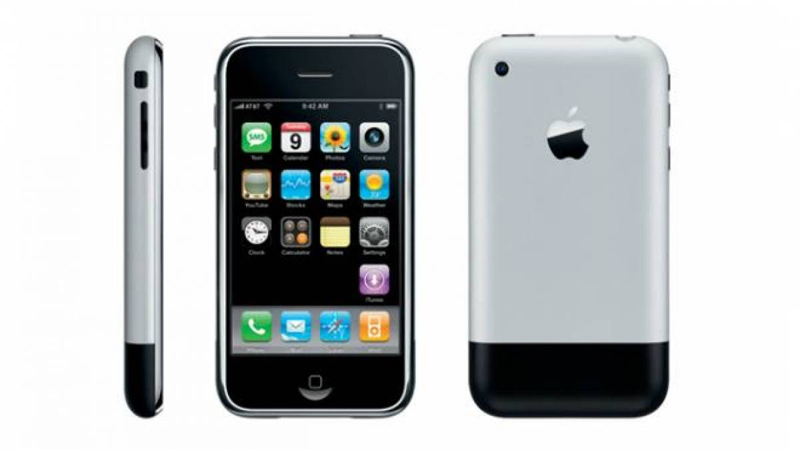
(Motorola):
A Motorola iniciou suas atividades em Chicago, Illinois, como Galvin Manufacturing Corporation em 1928, quando os irmãos Paul V. Galvin e Joseph E. Galvin compraram o projeto e o maquinário da falida empresa Stewart Battery Company, especializada na fabricação de eliminadores de bateria.
Os primeiros produtos fabricados pela Motorola foram eliminadores de bateria (aparelhos destinados a radios movidos a bateria a funcionarem com o uso de eletricidade doméstica).
Devido aos avanços da tecnologia, os eliminadores de bateria tornaram-se rapidamente obsoletos. Paul Galvin tomou conhecimento de que alguns técnicos em rádio instalavam esses aparelhos em automóveis.
Desafiou, então, seus técnicos a fazer um projeto de rádio automotivo que fosse de preço baixo e que pudesse ser instalado na maioria dos automóveis.
Sua equipe foi bem sucedida e Galvin pôde apresentar, em junho de 1930, um modelo de rádio automotivo na Convenção da Radio Manufacturers Association, realizada em Atlantic City, New Jersey.
Ele levou de volta a Chicago número suficiente de encomendas que pudessem manter a empresa nesse ramo de negócios.
Para identificar o novo produto da empresa, Paul Galvin criou o nome Motorola, juntando a palavra "motor" (de automotor) com o sufixo "ola".
Esse sufixo era popular à época, formando nomes conhecidos, como Moviola, radiola, vitrola etc.
A empresa vendeu seu primeiro rádio automotivo com a marca Motorola ainda no mês de junho de 1930.
A marca Motorola tornou-se tão conhecida que a Galvin Manufacturing Corporation decidiu alterar seu nome para Motorola, Inc. em 1947.
A empresa é baseada em Schaumburg, Illinois, um subúrbio de Chicago.
A Motorola no ano de 1930 começou a vender receptores de rádio em carros para departamentos de polícia.
A empresa foi pioneira em apresentar ao mercado um rádio FM direcional portátil, usado pelo exército americano durante a II Guerra Mundial.
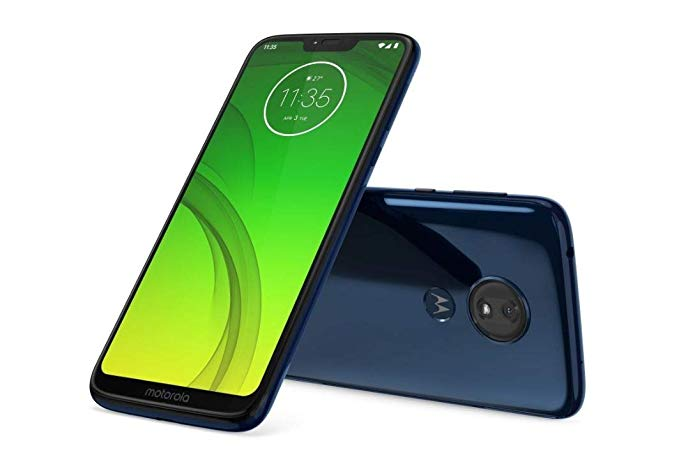
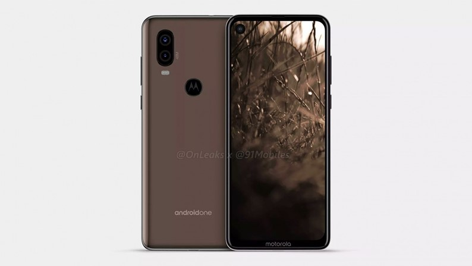
(Xiaomi):
O CEO da Xiaomi, o chinês Lei Jun, nunca negou sua admiração pela Apple — e não por acaso é chamado de Steve Jobs da China. Em 1987,
quando ainda era um estudante de Ciência da Computação, ele leu o livro "Fire in the Valley",
que conta a história dos primeiros computadores pessoais, com foco no surgimento da Microsoft e da Apple. Em 1999, o livro deu origem ao filme Piratas do Vale do Silício.
De acordo com Lei Jun, a história da Apple foi a inspiração para que ele virasse empreendedor.
A admiração é tanta que o CEO da Xiaomi já apresentou diversos keynotes trajando o tradicional “uniforme” de Steve Jobs,
com uma camisa preta e calça jeans azul. Em 2014, a empresa chegou a convidar Steve Wozniak,
co-fundador da Apple, para conhecer sua sede em Pequim. Como bom visitante, Wozniak elogiou os produtos da companhia e previu:
”A Xiaomi é boa o bastante para implodir o mercado norte-americano de smartphones”.
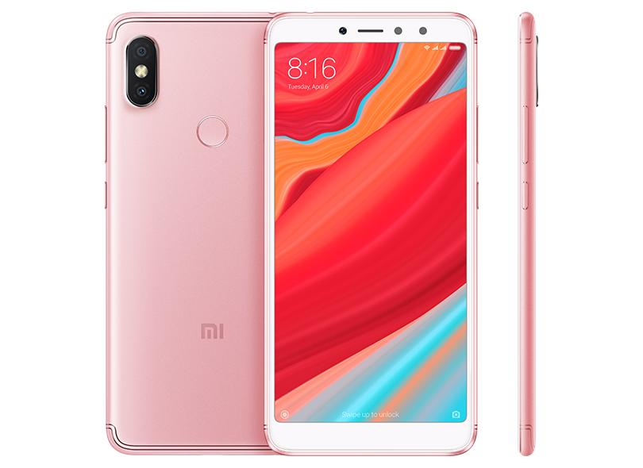
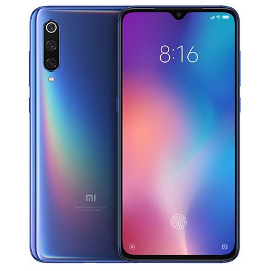
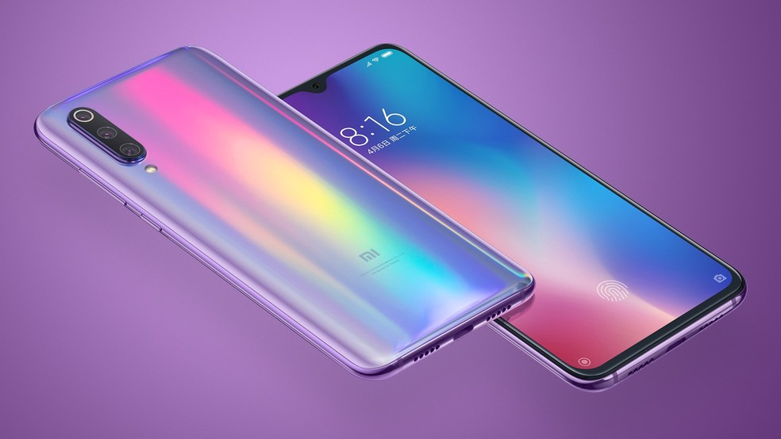